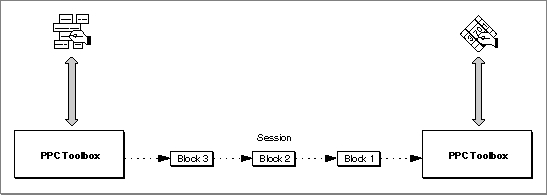

Exchanging Data During a PPC Session
After a session begins, each application can send data to and receive data from the other using a sequence of message blocks. The PPC Toolbox treats each message block as a byte stream and does not interpret the contents of the message block. The size of a message block can be between 0 and (232-1) bytes. The PPC Toolbox treats the buffer size as an unsigned long integer.The PPC Toolbox delivers the message blocks in the same sequence as they are sent and without duplicates. In Figure 11-17, an application transmits message blocks during a session.
Figure 11-17 Transmitting message blocks

For each message block, you specify a block creator, block type, and user data. The first
PPCWritefunction that you use to create a new message block sets the attributes for the block. ThePPCReadfunction returns the block creator, block type, and user data attributes for the current message block when the call completes.Although the PPC Toolbox does not interpret these attributes, they can give the receiving application information about how to process the contents of the message block. For example, a database application may specify, in the block creator field, a counter to indicate the block number (block number 20 of 30 total blocks). This application could also specify a code, such as
'DREC', in the block type field to indicate that the information it contains is a database record. In addition, this application could specify, in the user data field, the length of the message block.Reading Data From an Application
An application can both read from and write data to another application during a session. Use thePPCReadfunction during a session to read incoming blocks of data from another application.Once a session is initiated, you should have a
PPCReadfunction pending. You can issue aPPCReadfunction from inside a completion routine. This provides you with immediate notification if an error condition arises or the session closes.The
blockCreator,blockType, anduserDatafields are returned for the block you are reading. (These fields are set by thePPCWritefunction.) To determine whether there is additional data to be read, check themorefield. The valueFALSEindicates the end of a message block.Listing 11-14 illustrates how you use the
PPCReadfunction to read data during a session.Listing 11-14 Using the
PPCReadfunction to read data during a sessionFUNCTION MyPPCRead(thePPCReadPBPtr: PPCReadPBPtr; theSessRefNum: PPCSessRefNum; theBufferLength: Size; theBufferPtr: Ptr): OSErr; BEGIN WITH thePPCReadPBPtr^ DO BEGIN ioCompletion := NIL; sessRefNum := theSessRefNum; {from PPCStart or PPCInform} bufferLength := theBufferLength; bufferPtr := theBufferPtr; END; MyPPCRead := PPCRead(thePPCReadPBPtr, TRUE); {asynchronous} END;You should make any calls toPPCReadasynchronously. You can provide a completion routine that will be called when thePPCReadfunction has completed, or you can poll theioResultfield of the PPC parameter block to determine whether thePPCReadfunction has completed. APPCReadcompletion routine can issue another asynchronous PPC Toolbox call or set global variables. If another PPC Toolbox call is made from a completion routine, then thePPCReadfunction must use a record of data typePPCParamBlockRecinstead of typePPCReadPBRec.Listing 11-15 illustrates a function that can be used to poll the
ioResultfield of a record of data typePPCReadPBRec. The function returnsTRUEwhen thePPCReadfunction associated withPPCReadPBRechas completed.Listing 11-15 Polling the
ioResultfield to determine if aPPCReadfunction has completedFUNCTION MyReadComplete(thePPCReadPBPtr: PPCReadPBPtr; VAR err: OSErr): Boolean; BEGIN err := thePPCReadPBPtr^.ioResult; MyReadComplete := err <> 1; END;Sending Data to an Application
Use thePPCWritefunction to send a message block during a session specified by the session reference number.You should call the
PPCWritefunction asynchronously. You can provide a completion routine that will be called when thePPCWritefunction has completed, or you can poll theioResultfield of the PPC parameter block to determine whether thePPCWritefunction has completed. APPCWritecompletion routine can issue another PPC Toolbox call or set global variables. If another PPC Toolbox call is made from a completion routine, then thePPCWritefunction must use a record of data typePPCParamBlockRecinstead of typePPCWritePBRec. Note that message blocks are sent in the order in which they are written.Listing 11-16 illustrates how you use the
PPCWritefunction to write data during a session.Listing 11-16 Using the
PPCWritefunction to write data during a sessionFUNCTION MyPPCWrite(thePPCWritePBPtr: PPCWritePBPtr; theSessRefNum: PPCSessRefNum; theBufferLength: Size; theBufferPtr: Ptr): OSErr; BEGIN WITH thePPCWritePBPtr^ DO BEGIN ioCompletion := NIL; sessRefNum := theSessRefNum; {from PPCStart or PPCInform} bufferLength := theBufferLength; bufferPtr := theBufferPtr; more := FALSE; {no more data to read} userData := 0; {application-specific data} blockCreator := '????'; {application-specific data} blockType := '????'; {application-specific data} END; MyPPCWrite := PPCWrite(thePPCWritePBPtr, TRUE); {asynchronous} END;The firstPPCWritefunction that you use to create a new message block sets the block creator, block type, and user data attributes for the block. These attributes are returned to the application when it reads from the message block. Set themorefield toFALSEto indicate the end of the message block or set this field toTRUEif you want to append additional data to a message block.Listing 11-17 illustrates a function that can be used to poll the
ioResultfield of a record of data typePPCWritePBRec. The function returnsTRUEwhen thePPCWritefunction associated withPPCWritePBRechas completed.Listing 11-17 Polling the
ioResultfield to determine if aPPCWritefunction has completedFUNCTION MyWriteComplete(thePPCWritePBPtr: PPCWritePBPtr; VAR err: OSErr): Boolean; BEGIN err := thePPCWritePBPtr^.ioResult; MyWriteComplete := err <> 1; END;